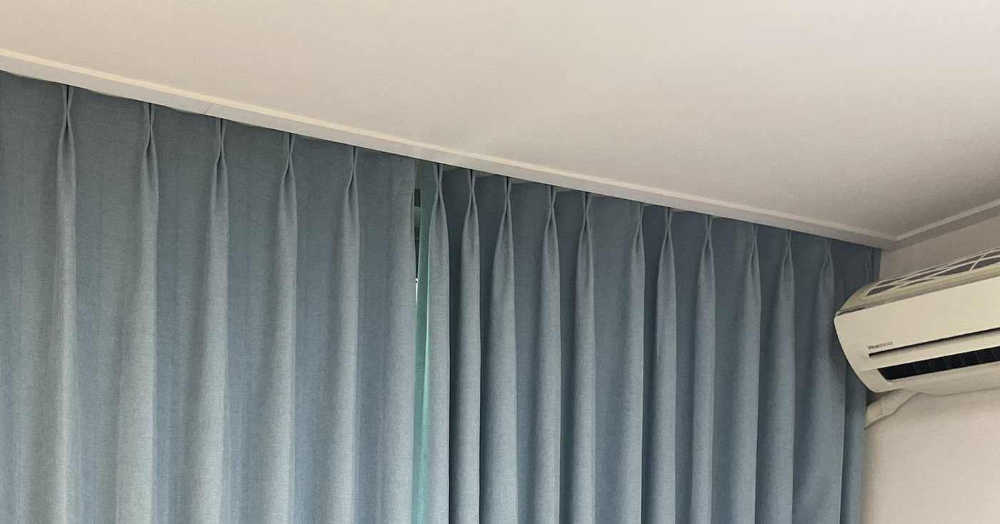
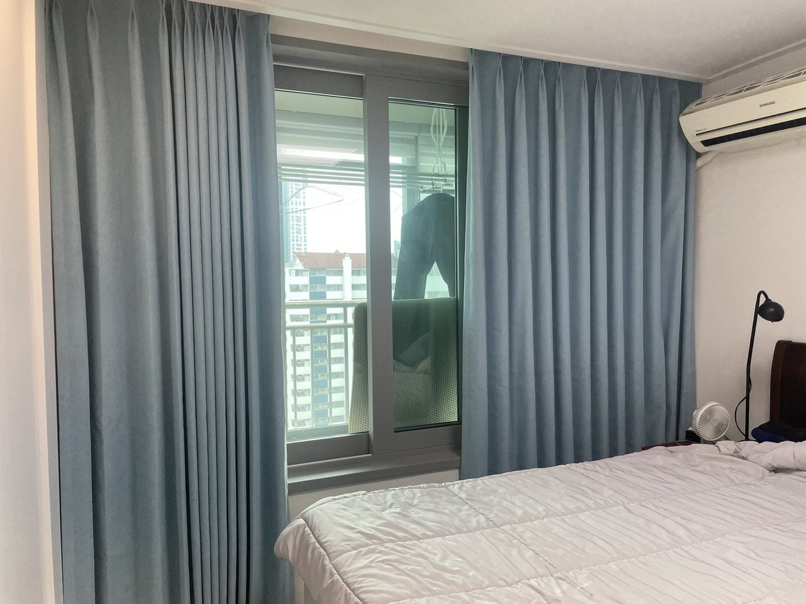

안녕하세요, 수도권 커튼·블라인드 전문 드리움 커튼&블라인드입니다. 이번 현장은 안양 평촌 한가람신라아파트 안방입니다. 명절을 앞두고 집을 새로 단장하고 싶다는 연락을 받고, 추석 연휴 기간에 실측부터 시공까지 진행했습니다. 잠을 자는 공간이라 빛을 확실히 막는 암막 원단을 기본으로 정했어요.
이번 시공 요약
- 위치 · 안양 평촌 한가람신라아파트
- 공간 · 안방
- 제품 · 블루그레이 샤넬 암막커튼
- 포인트 · 나비주름 · 천장 가까이 레일
블루그레이 샤넬 암막 — 단색인데 밋밋하지 않게

흰 벽과 밝은 침구 사이에서 튀지 않으면서도 방을 차분하게 잡아 줄 색으로 블루그레이를 골랐습니다. 샤넬 원단은 표면에 잔잔한 결이 있어 빛에 따라 질감이 살아나기 때문에, 단색 암막커튼이 자칫 무거워 보이는 걸 막아 줍니다.
나비주름으로 단정하게, 레일은 천장 가까이


주름은 나비주름으로 제작했습니다. 상단을 겹겹이 잡아 고정하는 방식이라 여닫을 때마다 주름이 흐트러지지 않아요. 레일은 천장 가까이 붙여 위쪽 빛샘을 줄였고, 폭은 벽 끝까지 넉넉하게 잡아 창 양옆으로 새는 빛까지 막았습니다.
드리움은 광명 본사에서 직접 실측하고 시공하며, 서울·경기·인천 전 지역 방문 견적을 무료로 진행합니다. 원단 샘플을 들고 찾아가 창에 직접 대 보며 상담해 드려요.